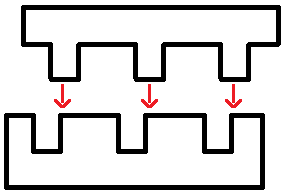

Vocabulary
Nouns:
반항아 = a rebel
Notes: “반항하다” translates to “to rebel.” The “아” refers to a child (as in 아기). This word is not used to refer to somebody who is rebelling against a government or society or something like that. Instead, this word is used to refer to a child who rebels against his parents or teachers. To refer to a rebel against society or other things, you can use the word 반역자.
Examples:
귀신 = ghost
Common Usages:
Examples:
거미 = spider
Common Usages:
Examples:
고래 = whale
Common Usages:
Examples:
늑대 = wolf
The pronunciation of this word is closer to “늑때”
Examples:
학위 = a degree (in universities)
Notes: When referring to a Bachelors, Masters or Doctorate degree, you can place the word 학위 after 학사, 석사 and 박사 respectively. It is also common to not use the word 학위 and simply use the words 학사, 석사 and 박사 by themselves. I guess this would be like the difference between “I got my Master’s” and “I got my Master’s degree” in English.
Common Usages:
Examples:
학사 학위 = bachelor’s degree
The pronunciation of this word is closer to “학싸 학위”
Examples:
석사 학위 = master’s degree
The pronunciation of this word is closer to “석싸 학위”
Examples:
박사 학위 = Ph. D
The pronunciation of this word is closer to “박싸 학위”
Notes: In English, a “doctor” can refer to a medical doctor, or a person who holds a Ph.D. You wouldn’t want to call Ph.D. holders “의사” in Korean (unless of course, they happen to also be a medical doctor). Instead, you can call these people “박사님.”
Examples:
지식 = knowledge
Common Usages:
Examples:
비평 = criticism
Common Usages:
Examples:
등급 = rating, grade
Notes: Sino-Korean numbers are used when referring to different ranks.
Examples:
(Korean students are often placed in a ranking based on their score on an exam. Their actual individual score on the exam is less important. It is more important to get a higher ranking than your peers. More than one person can get a certain rank. For example, there might be four people with the “2nd” rank.)
단추 = button
Notes: Like in English, 단추 can refer to a button on one’s clothing, or a button that one presses. To refer to the button that one presses, it would also be common to use the word “버튼.”
Common Usages:
Idiom:
Examples:
화장품 = cosmetics
Examples:
소화기 = fire extinguisher
Examples:
분필 = chalk
Examples:
동기 = motive
Common Usages:
Examples:
일상 = everyday life
The pronunciation of this word is closer to “일쌍”
Common Usages:
Examples:
Verbs:
유의하다 = to pay attention to
Examples:
정지하다 = to stop, to halt
Common Usages:
Examples:
모방하다 = to imitate, to mimic
The noun form of this word (“모방”) translates to “an imitation.”
Examples:
반항하다 = to rebel
The noun form of this word (“반항”) translates to “disobedience.”
Common Usages:
Examples:
보장하다 = to guarantee
The noun form of this word (“보장”) translates to “a guarantee.”
Examples:
Passive Verbs:
어긋나다 = to be dislocated, to be out of step
The pronunciation of this word is closer to “어근나다”
Notes: I love this word. It’s hard to translate this into English sometimes, but it can be used to describe many things. Imagine you go to the classroom to find your friend, and she is not there so you leave. Right after you leave, she goes to the classroom to find you. You two are just kind of “out of step” with each other – you couldn’t match the times correctly. This situation describes “어긋나다.”
I have a picture of the meaning of “어긋나다” in my head. It looks like this:
Look at the prongs of the box on the top! They could fit perfectly with the holes of the bottom box, but they are just a bit out-of-step with each other. I would say that they are just a little bit “어긋나다” with each other.

I showed that picture to my wife, and asked her what word she thought I was drawing. Her first guess was “어긋나다.”
This idea of two things not being matched perfectly can apply to many situations, including personalities, movements, or even bones! For example, the way one describes that they have a fractured bone in Korean is to use the word “어긋나다.”
Common Usages:
Examples:
Introduction
This lesson covers how to say “almost” in Korean. The usual translation is “거의,” but in some cases you need a special noun instead.
Almost:거의
거의 is a very common adverb, used much like “almost” in English. It helps to separate its usages. 거의 can be used to:
1) Show that an action is in progress and has “almost” reached its limit. Once it reaches the limit, it will likely stop. For example:
Note that this kind of sentence can mean different things depending on context. It could mean you are eating now, have “almost” finished the rice, and will keep eating until it is gone. It could also mean you “almost” ate all of it but stopped because you hit some limit (you were full, say). Korean can’t distinguish these without context, but English can. The two readings would be:
I have almost eaten all the rice
I almost ate all of the rice
In Korean, one sentence covers both meanings. The same goes for the other five examples with “거의” below:
2) Show that something is just a little off from some description. For example:
There is also a third type of sentence, using the word 뻔. That comes next.
Almost:거의…~ㄹ/을 뻔했다
In the previous section, “거의” meant “almost” in a few different ways. There is one more type of sentence. In this usage, the action that “almost” happened never started at all, and will not happen in the future either (unless another sentence says it did).
Look at this example from the previous section.
There, the action that “almost” happened was “eating (all the rice).” Even though you didn’t eat all of it, the “eating” was in progress until you hit your limit.
However, look at the following example:
In this sentence, the action of “falling” never started, and will not start. In these cases, attach the following to the action that did not occur:
~ㄹ/을 뻔 했다.
For example:
This kind of sentence says the action (here, falling) never actually happened, even though it “almost” did.
“뻔” is another pseudo-noun with no meaning outside its grammatical form, like “수” in “할 수 있다” (Lesson 45) and “적” in “한 적이 없다” (Lesson 32).
Below are many more examples:
(Before you almost hit the car, you were not doing the action of “hitting the car”)
(Before you almost punched your friend, you were not doing the action of “punching your friend”)
These sentences don’t need the word “거의.” The meaning of “almost” is already built into “~ㄹ/을 뻔 하다”. Still, it is not unusual to see the two used together in Korean.